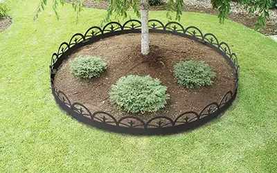
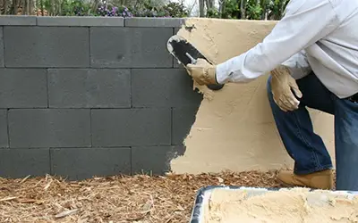
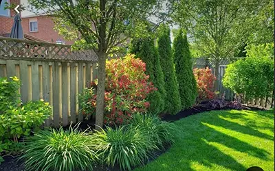
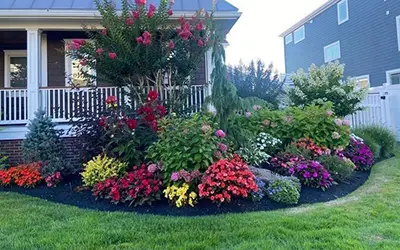

Services


Garden Renovation
Garden Maintenance
Fence Repair
Garden Design
I am so pleased with the work that Evergreen Design Company did in my garden. As an older woman, I find it difficult to keep up with maintaining my yard, but their team came in and completely transformed it into a beautiful, peaceful space. The flowers are vibrant, the lawn is lush, and the attention to detail is simply stunning. They were professional, respectful, and truly listened to what I wanted. It is such a relief knowing that my garden looks wonderful and that I no longer have to worry about it. I can not thank them enough for making my yard a place of beauty again.
I recently had the leasure of working with Evergreen Design company while I was away on a trip, and I couldn't be more thrilled with the results! The team transformed my yard into a beautiful garden paradise. I came home to vibrant flowers, perfectly manicured lawns, and thoughtfully arranged landscaping that completely exceeded my expectations. They paid great attention to detail and ensured everything was perfect, from the plant choices to the layout. It was such a relief to know that my yard was in good hands, and I can not recommend their services enough to anyone looking for quality landscaping. It is clear they genuinely care about their work, and I am so happy with how everything turned out.